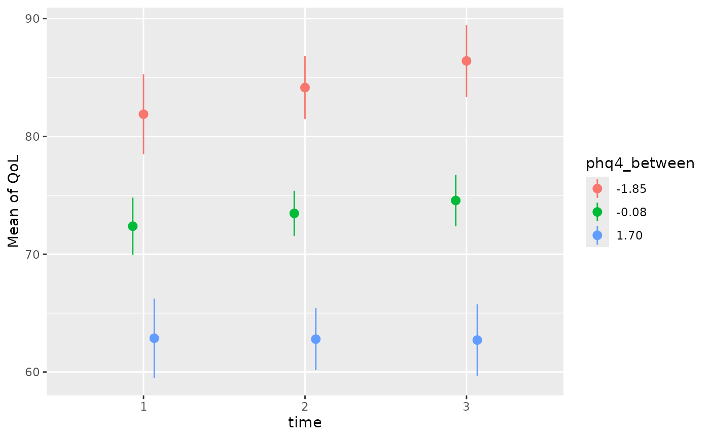

Context Effects: How the Environment Shapes the Individual
Source:vignettes/practical_context_effect.Rmd
practical_context_effect.RmdWhen analyzing longitudinal or clustered data, a standard mixed-effects model often blends two completely different processes into a single coefficient: the overall differences between individuals (or groups) and the acute fluctuations within an individual. However, separating these effects is just the first step. By evaluating them side-by-side, we can uncover a third, crucial piece of the puzzle: the context effect.
The context effect describes the additional influence that a broader
environment or a chronic baseline trait has on an individual,
independent of their immediate, momentary state Rohrer and Murayama (2023). By using the
demean() function to separate our time-varying predictors,
we can isolate the within- and between-components, evaluate them
independently, and formally test how the overarching context shapes
individual outcomes.
To understand the underlying problem of heterogeneity bias, demeaning (person-mean centering), and within/between effects in more detail, it is highly recommended to read this vignette first.
Sample data used in this vignette
library(parameters)
data("qol_cancer")- Variables:
-
QoL: Response (quality of life of patient) -
phq4: Patient Health Questionnaire, time-varying variable -
education: Educational level, time-invariant variable, co-variate -
ID: patient ID -
time: time-point of measurement
-
Computing the de-meaned and group-meaned variables
To calculate the within- and between-effects, we perform a special way of centering variables called demeaning. This “separates” the within-effect from a between-effect of a predictor.
Now we have:
phq4_between: time-varying variable with the mean ofphq4across all time-points, for each patient (ID).phq4_within: the de-meaned time-varying variablephq4.
Calculating the within- and between effects using mixed models
First, we start with calculating the within- and between-effects from
phq4, before we move on to investigate the context
effects.
library(lme4)
mixed <- lmer(
QoL ~ time + phq4_within + phq4_between + education + (1 + time | ID),
data = qol_cancer
)
# effects = "fixed" will not display random effects, but split the
# fixed effects into its between- and within-effects components.
model_parameters(mixed, effects = "fixed")
#> # Fixed Effects
#>
#> Parameter | Coefficient | SE | 95% CI | t(554) | p
#> ------------------------------------------------------------------------
#> (Intercept) | 67.36 | 2.48 | [62.48, 72.23] | 27.15 | < .001
#> time | 1.09 | 0.66 | [-0.21, 2.39] | 1.65 | 0.099
#> phq4 within | -3.72 | 0.41 | [-4.52, -2.92] | -9.10 | < .001
#> phq4 between | -6.13 | 0.52 | [-7.14, -5.11] | -11.84 | < .001
#> education [mid] | 5.01 | 2.35 | [ 0.40, 9.62] | 2.14 | 0.033
#> education [high] | 5.52 | 2.75 | [ 0.11, 10.93] | 2.00 | 0.046Looking at the fixed effects output for the phq4
(Patient Health Questionnaire) variable, we can interpret the
coefficients as follows:
The Between-Effect (
phq4_between= -6.13): This captures the general, trait-like differences across patients. It answers the question: How does a patient’s overall average score affect their outcome compared to other patients? If Patient A has an overall averagephq4score that is 1 unit higher than Patient B’s average, we expect Patient A’s Quality of Life (QoL) to be 6.13 points lower on average than Patient B’s.The Within-Effect (
phq4_within= -3.72): This captures the state-like, time-to-time fluctuations for an individual. It answers the question: What happens when a patient deviates from their own baseline? If a patient scores 1 unit higher on thephq4at a specific time-point compared to their own personal average, their expected Quality of Life at that specific measurement decreases by an additional 3.72 points.
If we had entered phq4 into the model as a single,
uncentered variable, the resulting coefficient would be a weighted
average of these two distinct effects. This can be highly misleading, as
it obscures both the overarching patient-to-patient differences and the
specific time-to-time dynamics. Separating them provides a much clearer
picture of how psychological burden impacts quality of life on multiple
levels.
Context effect - contrasting within- and between-effects
Conceptually, when analyzing clustered or longitudinal data, we are looking at two distinct levels of influence:
Individual level (within-effect): What is the impact of an individual’s temporary deviation from their own group mean? This captures state-like fluctuations or acute changes.
Group level (between-effect): What is the impact of the group’s general environment or overall average, which affects all members equally? This captures trait-like, baseline differences or overarching environments.
The difference between these two effects is called the context effect. A context effect describes the additional influence that the general environment or baseline trait has on an individual, holding their raw, current state constant. It demonstrates that people with identical current, raw values (such as the exact same momentary income or symptom severity) face different outcomes depending on their baseline or the environment in which they live.
To test whether the within- and between-effects are significantly different from each other, we can estimate their contrast:
library(modelbased)
estimate_contrasts(mixed, c("phq4_within", "phq4_between"))
#> Marginal Contrasts Analysis
#>
#> Difference | SE | 95% CI | z | p
#> ------------------------------------------------
#> 2.41 | 0.66 | [1.12, 3.70] | 3.66 | < .001
#>
#> Variable predicted: QoL
#> Predictors contrasted: phq4_within, phq4_between
#> p-values are uncorrected.The output shows a significant contrast of 2.41 between the within- and between-effects. Since the between-effect in our model (-6.13) is stronger (more negative) than the within-effect (-3.72), the context-effect (Between minus Within) is -2.41.
What does this mean practically?
Imagine two patients who both report the exact same raw
phq4 score on a given day. However, Patient A generally
suffers from a higher overarching psychological burden (their personal
phq4 average is 1 unit higher than Patient B’s). The
context effect tells us that, despite experiencing the exact same
severity of symptoms today, Patient A’s expected Quality of Life is an
additional 2.41 points lower than Patient B’s simply because of their
higher baseline burden. The trait-like baseline carries an extra
“penalty” for the quality of life that goes beyond mere day-to-day
fluctuations.
Time trends of within- and between-effects
To investigate whether the impact of phq4 changes over
time, we can extend our model by adding interaction terms between the
time of measurement (time) and our two centered variables
(phq4_within and phq4_between).
mixed <- lmer(
QoL ~ time * (phq4_within + phq4_between) + education + (1 + time | ID),
data = qol_cancer
)
model_parameters(mixed, effects = "fixed")
#> # Fixed Effects
#>
#> Parameter | Coefficient | SE | 95% CI | t(552) | p
#> ---------------------------------------------------------------------------
#> (Intercept) | 67.33 | 2.49 | [62.43, 72.23] | 26.99 | < .001
#> time | 1.04 | 0.66 | [-0.25, 2.33] | 1.58 | 0.114
#> phq4 within | -4.37 | 1.25 | [-6.81, -1.92] | -3.50 | < .001
#> phq4 between | -4.70 | 0.96 | [-6.58, -2.82] | -4.90 | < .001
#> education [mid] | 5.19 | 2.38 | [ 0.52, 9.87] | 2.18 | 0.029
#> education [high] | 5.61 | 2.76 | [ 0.18, 11.04] | 2.03 | 0.043
#> time × phq4 within | 0.33 | 0.61 | [-0.87, 1.52] | 0.54 | 0.592
#> time × phq4 between | -0.66 | 0.37 | [-1.39, 0.07] | -1.77 | 0.077The results table now shows us whether time has a moderating influence on our effects. To see this, we look at the two interaction terms at the bottom of the table:
Interaction
time × phq4_within: The coefficient (0.33) is small and not statistically significant (p = 0.592). This means that the negative effect of individual, temporary fluctuations remains largely stable over time. When a patient’s psychological burden acutely increases, their quality of life decreases to a very similar extent at any given time point.Interaction
time × phq4_between: This coefficient (-0.66) is also not statistically significant (p = 0.077). The negative sign suggests that the gap between patients potentially widens slightly over time. The “disadvantage” in quality of life experienced by patients with a generally high psychological baseline burden might further increase over the course of the study compared to less burdened patients.
These temporal dynamics can be best understood visually using Estimated Marginal Means. The generated plots confirm the statistical results from the table very clearly.
estimate_means(mixed, c("time", "phq4_within=[sd]")) |> plot()In the first plot (within-effects over time), the lines for
the different levels of phq4_within (mean as well as +/-
one standard deviation) run almost parallel. The constant distance
between the lines visualizes the lack of interaction: An acute increase
in psychological symptoms (shifting to the blue line) depresses the
quality of life uniformly across all time points.
estimate_means(mixed, c("time", "phq4_between=[sd]")) |> plot()
In the second plot (between-effects over time), a slight divergence of the lines is visible. While patients with a generally low burden (red line) experience a slight increase in their quality of life over time, the quality of life for patients with a generally high burden (blue line) stagnates at a lower level or even drops minimally.
Time trends of context effects
Finally, we might ask whether the context effect itself - the difference between the within- and between-effects - is stable, or if the “penalty” of a high baseline burden changes over the course of the study. We can examine this by calculating the marginal contrasts at each specific time point.
estimate_contrasts(mixed, c("phq4_within", "phq4_between"), by = "time")
#> Marginal Contrasts Analysis
#>
#> time | Difference | SE | 95% CI | z | p
#> --------------------------------------------------------
#> 1 | 1.32 | 1.00 | [-0.65, 3.28] | 1.32 | 0.188
#> 2 | 2.31 | 0.66 | [ 1.01, 3.60] | 3.48 | < .001
#> 3 | 3.29 | 0.99 | [ 1.36, 5.22] | 3.34 | < .001
#>
#> Variable predicted: QoL
#> Predictors contrasted: phq4_within, phq4_between
#> p-values are uncorrected.The contrast analysis reveals a clear and interesting trajectory: the context effect grows substantially stronger as time progresses.
At Time 1 (Baseline): The difference between the within- and between-effect is relatively small (1.32) and not statistically significant (p = 0.188). This indicates that at the beginning of the observations, it does not matter much whether a patient’s psychological burden is acute (a temporary spike) or chronic (a generally high baseline). The immediate impact on their Quality of Life is very similar.
At Time 2 and Time 3: As the study progresses, the contrast becomes highly significant and the gap widens (increasing to 2.31, then 3.29).
What does this mean practically?
Over time, having a chronically high baseline of psychological symptoms (the trait-level burden) becomes increasingly detrimental compared to merely experiencing a temporary, acute spike in symptoms. While patients might be able to buffer or cope with an acute worsening of their mental state similarly well at any point, the cumulative “wear and tear” of a chronically high burden takes an increasing toll on their quality of life as time goes on.
Testing the Change in the Context Effect Over Time
While the previous table showed the context effect at each specific time point, we also need to formally test whether the change in this effect over time is statistically significant. We can do this by computing pairwise comparisons of the context effect across the different time points.
estimate_contrasts(mixed, c("phq4_within", "phq4_between", "time"))
#> Marginal Contrasts Analysis
#>
#> Level1 | Level2 | Difference | SE | 95% CI | z | p
#> ------------------------------------------------------------------
#> 2 | 1 | 0.99 | 0.74 | [-0.47, 2.44] | 1.33 | 0.183
#> 3 | 1 | 1.97 | 1.48 | [-0.93, 4.88] | 1.33 | 0.183
#> 3 | 2 | 0.99 | 0.74 | [-0.47, 2.44] | 1.33 | 0.183
#>
#> Variable predicted: QoL
#> Predictors contrasted: phq4_within, phq4_between
#> p-values are uncorrected.This pairwise comparison table adds a crucial statistical caveat to our visual and descriptive observations. The Difference column here represents the mathematical change in the size of the context effect between two specific time points (e.g., the context effect grew by 0.99 points from Time 1 to Time 2).
However, looking at the statistics, we can see that none of the differences between the time points are statistically significant (all p-values = 0.183).
What does this mean practically?
Although our previous analysis showed the context effect becoming locally significant at Time 2 and Time 3, and descriptively appearing to grow, we do not have enough statistical evidence to claim that the context effect changes over time. The widening gap we observed is not robust enough to rule out random sampling variation.
Therefore, the most accurate conclusion is that the “penalty” of having a chronically high baseline burden (the context effect) is consistently present across the later stages of the study, but its magnitude remains relatively stable rather than strictly worsening over time.